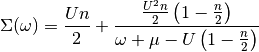

Hubbard I solver Bethe lattice¶
Atomic limit expression of the self-energy is described by

This approximation is most accurate in the limit of strong coupling, as there the atomic case is closer. Nevertheless it is possible to see the formation of the Hubbard Bands and the redistribution of spectral weight.
Out:
n_new 1.97901484639
n_new 1.67550206029
n_new 1.78121999181
n_new 1.74447416817
n_new 1.75728528387
n_new 1.75279719806
n_new 1.75437710222
n_new 1.75382113619
n_new 1.75401684774
n_new 1.75394795984
# Created Mon Sep 28 15:25:30 2015
# Author: Óscar Nájera
from __future__ import division, absolute_import, print_function
import matplotlib.pyplot as plt
import numpy as np
from scipy.integrate import trapz
import dmft.common as gf
def hubbard_aprox(U, dmu, omega):
mu = U / 2 + dmu
n = 1.
for _ in range(10):
sigma = n * U / 2 + n / 2 * (1 - n / 2) * \
U**2 / (omega + 0.05j + mu - (1 - n / 2) * U)
gloc = gf.semi_circle_hiltrans(omega + mu - sigma)
dos = -gloc.imag / np.pi
n = 2 * trapz(dos * (omega < 0), omega)
print('n_new', n)
plt.plot(omega, -gloc.imag)
omega = np.linspace(-8, 4, 600)
hubbard_aprox(3, 2.051, omega)
plt.show()
Total running time of the script: ( 0 minutes 0.065 seconds)